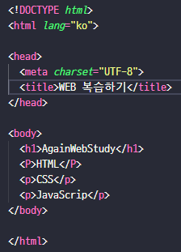

- <!DOCTYPE html> : 현재 문서가 HTML5 언어로 작성한 문서이다.
- <html lang="ko> : 웹 문서의 시작과 끝. 웹 브라우저가 <html>태그를 만나면 </html>까지의
소스를
읽어
화면에 표시함. </html> 뒤에는 아무것도 오면 안됨.
ㄴ lang="ko" : lang 속성(attributte)으로 값으로 문서에 사용할 언어를 지정할수 있음. 언어를 지정하면 검색엔진에서 지정된 특정 언어로된 웹문서를 우선검색. 시작장애인의 화면 낭독기에서 지정한 언어에 맞춰 발음이나 억양, 목소리 등을 다르게 할수있음. - <head></head> : 웹 브라우저가 알아야할 정보 입력. 웹 브러우저 화면에는 보이지 않음.
-
<meta> : 데이터에 관한 데이터. 가장 중요한 역할은
(1) 화면에 글자 표시를 할 때 어떤 인코딩을 사용할지 지정. 웹 서버는 영어가 기본이므로 화면에 한글로 된 내용을 표시할 때에는 <meta charset="UTF-8">(한글 인코딩을 명시) 문자 세트를 사용한다고 웹브라우저에 알려줘야함. 인코딩을 명시하지 않으면 한글이 깨질 수도 있음.
(2) 웹 사이트의 키워드나 간단한 설명, 제작자 등의 정보 지정. 검색 엔진에서 사이트를 검색할때 참고.
ㄴ <meta name="keywords" content="html의 구조."> : 웹 문서의 키워드
ㄴ <meta name="description" content="html의 구조를 알아봅시다."> : 웹 문서의 설명
ㄴ <meta name="author" content="poppy"> : 웹문서의 소유자나 제작자
- <title> : <head> 태그에서 가장 중요한 역할. 웹 브라우저 제목 표시줄(탭)에 보임. 해당페이지의 방문자나 검색엔진이 =title>을보고 문서 전체 내용을 추측. 화면낭독기에서 문서를 구분짓는데 사용하기때문에 정확하게 입력해야함.
-
<meta> : 데이터에 관한 데이터. 가장 중요한 역할은
- <body></body> : 실제 웹 브라우저에 표시할 내용.
3-1. HTML과 재회
HT : Hyper Text 웹에서 자유롭게 오갈 수 있는 링크.
M : Mark up 표시하다. 텍스트뿐만 아니라 이미지, 영상 등을 표시함. (마크업에서 사용하는 약속된 꼬리표를 '태그(tag)'라고 함.) 태그를 붙여주는 행위.
L : Languge 언어.
HTML : 웹에서 자유롭에 오갈 수 있는 웹 문서를 만드는 언어. / 기본기능 -> 웹 브라우저에 보여 줄 내용에 마크업 하고 문서끼리 링크.
3-2. HTML 구조파악하기

3-4. 웹 문서 구조를 만드는 시맨틱 태그
시멘틱태그 : 이름만 봐도 알수있는 태그(시맨틱? '의미론적인', '의미가 통하는')
시맨틱태그를 사용하는 이유
- 웹 브라우저가 HTML의 소스 코드만 보고도 어느부분의 내용인지 쉽게 알수있음 그래서 시각 장애인이 웹 사이트를 이용할때 쓰는 화면 낭독기와 같은 보조 기기에서 사이트의 구조를 제대로
이해할수
있음.
-> 웹사이트 사용자에게 좀 더 정확한 내용을 전달할 수 있음. - 문서 구조가 정확히 나눠지므로 PC나 모바일의 웹 브라우저와 여러 스마트기기의 다양한 화면에서 웹 문서를 표현하기가 쉬움.
- 인터넷에서 웹 사이트를 검색할 때 필요한 내용을 정확히 찾을 수 있음.
-> 웹 사이트의 본문 내용을 검색해야 한다면 메뉴나 푸터 영역이 아니라 본문 영역 안에서만 검색.
시맨틱태그의 종류
- <header></header> : 사이트 전체의 헤더, 특정 영역의 헤더. 주로 맨위나 왼쪽.로고, 검색 창이나 사이트 메뉴를 삽입.
- <nav><nav> : 그는 같은 웹 문서 안에서 다른 위치로 연결하거나 다른 웹 문서로 연결하는 링크를 만듦. 웹 문서의 위치에 영향을 받지 않으므로 헤더나 푸터, 사이드 바 안에 포함할 수도 있고 독립해서 사용할 수도 있음.
- <main></main> : 웹 문서에서 핵심이 되는 내용. 메뉴, 사이드 바, 로고처럼 페이지마다 똑같이 들어간 정보는 넣을수 없음. 웹 문서마나다 다르게 보여 주는 내용으로 구성. 웹문서에 한번만 사용가능.
- <article></article> : 웹에서 실제로 보여주고 싶은 내용. 블로그의 포스트나 기사처럼 독립된 웹콘텐츠. 안에 <section></section>태그를 넣을수 있음.
- <section></section> : 콘텐츠 영역. <article> 태그는 블로그의 포스트 처럼 독립된 콘텐츠, <section>태그는 몇 개의 콘텐츠를 묶는 용도 (*단순히 스타일을 적용하려고 콘텐츠를 묶으려면 <div> 태그를 사용.)
- <aside></aside> : 사이드바. 필요할 경우에만 사용.
- <footer></footer> : 맨 아래쪽 푸터영역. 사이트정보, 저작권 정보, 연락처 등을 넣음. 안에 <header>, <article>, <section>태그등 다른 시멘틱 태그를 모두 사용할수 있음.
- <div></div>(division: 나누기,분할,분배) : 시멘틱 태그가 나오기전 id, calss 속성을 사용해 영역을 구분하거나 스타일로 문서를 꾸몄음.